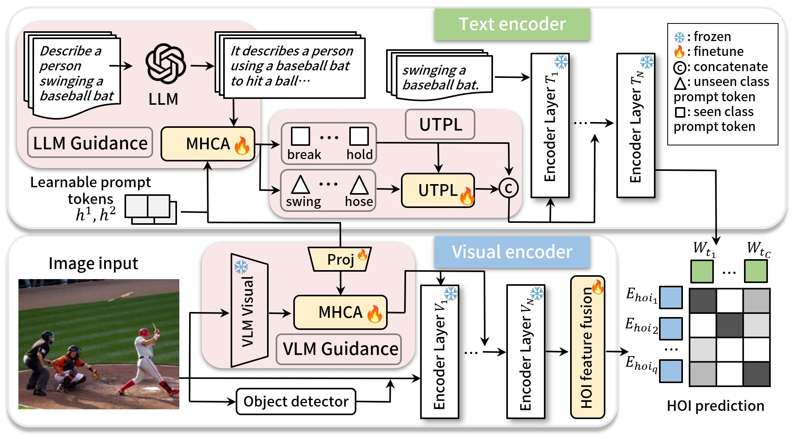

Code
Abstract
Detecting human-object interactions (HOI) in zero-shot settings, where models must handle unseen classes, poses significant challenges. Existing methods that rely on aligning visual encoders with large Vision-Language Models (VLMs) to tap into the extensive knowledge of VLMs, require large, computationally expensive models and encounter training difficulties. Adapting VLMs with prompt learning offers an alternative to direct alignment. However, fine-tuning on task-specific datasets often leads to overfitting to seen classes and suboptimal performance on unseen classes, due to the absence of unseen class labels. To address these challenges, we introduce EZ-HOI, a novel prompt learning-based framework for efficient zero-shot HOI detection. First, we introduce LLM and VLM guidance for learnable prompts to enrich the prompt knowledge and benefit the adaptation to HOI tasks. However, because training datasets contain seen-class labels alone, fine-tuning VLMs on such datasets tends to optimize text prompts for seen classes instead of unseen ones. Therefore, we design text prompt learning for unseen classes by learning from related seen classes. Considering the difference between unseen and related seen classes, large language models (LLM) are utilized to provide the disparity information to further improve prompt learning for unseen classes. Quantitative evaluations on benchmark datasets demonstrate that our EZ-HOI achieves state-of-the-art performance across various zero-shot settings with only 10.35% to 33.95% of the trainable parameters compared to existing methods.
Teaser Figure
An Efficient Zero-shot HOI detection method with good generalization ability to unseen classes and small computational cost.

Pipeline and Illustration
Below is the pipeline diagram of the proposed method:
Qualitative and Quantitative Results
Qualitative Results
Here are some qualitative results of our method:
Citation
Qinqian Lei, Bo Wang, Robby T. Tan. Efficient Zero-Shot HOI Detection: Enhancing VLM Adaptation with Innovative Prompt Learning. Advances in Neural Information Processing Systems, 2024
Here is the BibTeX entry for citation:
@inproceedings{
lei2024efficient,
title={Efficient Zero-Shot HOI Detection: Enhancing VLM Adaptation with Innovative Prompt Learning},
author={Lei, Qinqian and Wang, Bo and Robby T., Tan},
booktitle={The Thirty-eighth Annual Conference on Neural Information Processing Systems},
year={2024}
}